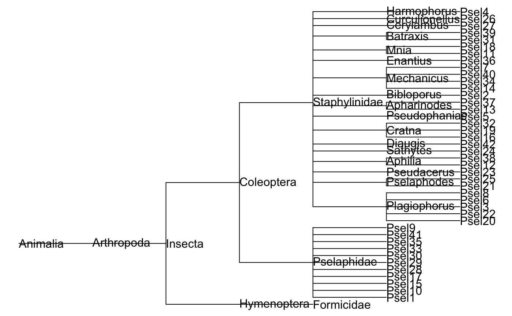
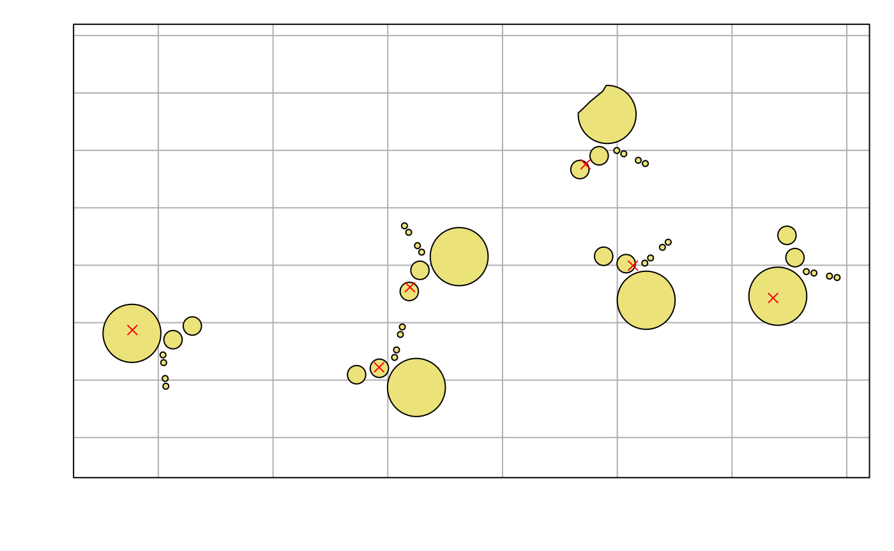

Using the safedata package
Andy Aldersley and David Orme
2019-08-07
using_safe_data.RmdThe safedata package makes it easy to search for and use datasets collected at the SAFE Project. It provides an interface to download data files and packaged record metadata and then functions to load data worksheets and add taxonomic and spatial data where available.
For further information on the publication and structure of data through the SAFE Project and within the safedata package, see the Overview vignette: vignette("overview", package = "safedata").
Installing safedata
Currently, safedata can only be installed from GitHub:
In the future, it should be available from CRAN:
Package dependencies
The safedata package requires the following packages:
-
readxl, to read data directly from Excel datasets, -
jsonliteandcurl, to communicate with the SAFE API and to read downloaded JSON data, -
chron, to represent time of day data, and -
sf, to handle spatial data about sampling locations.
The SAFE data directory
The safedata package makes use of a local directory to store downloaded data, index and metadata files (vignette("overview", package = "safedata") for details) . These files are needed for the safedata functions to work correctly, so the first step in using safedata is to set the location of the directory and the package will remind you to do this when it is loaded.
Initialising a SAFE data directory
If this is the first time you are loading safedata – or if you simply want to have two separate SAFE data directories – then you need to create a new, empty directory.
This will create the directory and download the current index files. You cannot use an existing directory: the package wants to start with a fresh, empty directory. Note that the directory path is stored in options():
Using an existing SAFE data directory
Once you have a SAFE data directory, the same function is used to tell the safedata package where to look for index and data files:
set_safe_dir('my_safe_directory')
## Checking for updates
## - Index up to date
## - Gazetteer up to date
## - Location aliases up to date
## Validating directoryYou will see that this function checks with the SAFE Project website for updates to the key index files. This can be turned off for offline use (set_safe_dir('~/my_safe_directory', update=FALSE)). The function also validates local data files: it checks the MD5 hash of local data file copies against the MD5 of the published file. You can suppress validation (set_safe_dir('~/my_safe_directory', validate=FALSE)), but this is not advised: altering the contents of a published data file undermines reproducible research.
Exploring record metadata
You can browse published SAFE dataset at either our SAFE Zenodo community or on the SAFE Project website. Datasets are identified by their Zenodo record number, which is the number included in both the dataset DOI and Zenodo URL. All of the following point to the same dataset:
Note that all metadata is available for all records, regardless of whether they are open, embargoed or restricted. This includes field descriptions and taxon and location sampling so that users can assess whether a dataset is going to be useful even if it is not yet openly available.
Once you have found datasets that you want to explore further, then you can use the validate_record_ids() function. This function does the following:
- checks that the record is valid,
- checks whether the record number is a record id, referring to a specific version of a dataset, or a concept id, which identifies all the versions of a dataset. In the example code below, two of the values are record ids, so the appropriate concept id is located and printed, and one is a concept id, so no specific version number is given.
- checks whether the data are currently available, and
- provides an interface to download and import the related data files.
The output is an object of class safe_record_set:
recs <- validate_record_ids(c('https://doi.org/10.5281/zenodo.3247631',
'10.5281/zenodo.3266827',
'https://zenodo.org/record/3266821'))
print(recs)## Set includes 3 concept ids and 2 record ids:
## - 1 open and most recent (*)
## - 0 open and outdated (o)
## - 1 under embargo or restricted (x)
##
## concept record available
## 1 3247630 3247631 x
## 2 3266821 -------
## 3 3266826 3266827 *This object is just a data frame containing validated record ids and access information and so you can use the normal data frame indices (e.g. recs[1,]) to select particular records.
In addition, all of the main functions in safedata that expect to be passed a dataset id will run validate_record_ids() on their inputs, so you can simply use those URLs directly with those functions without needing to specifically create a safe_record_set yourself.
Displaying dataset metadata
Printing a safe_record_set object displays a deliberately compact summary of a set of record ids. There are three function that show the detailed metadata for records at three levels:
- the concept level: metadata about all the published versions of a particualar dataset,
- the record level: metadata about a specific version of a dataset, and
- the worksheet level: metadata about the fields available in a particular data worksheet.
show_concepts()
The show_concepts() function displays concept level metadata about a set of record ids. This includes the (most recent) dataset title and a short summary of the versions available under the dataset concept. Note that the output is not restricted just to the set of record ids given to the function: it shows metadata for all versions for each of the concept ids included.
##
## Concept ID: 3247630
## Title: Functional traits of tree species in old-growth and selectively logged forest
## Versions: 0 available, 1 embargoed or restricted
##
## record_id published embargo available
## 3247631 2019-06-17 2020-12-31 x
##
## -------------
##
## Concept ID: 3266821
## Title: Microclimate proxy measurements from a logging gradient in Malaysian Borneo (BALI project)
## Versions: 1 available, 0 embargoed or restricted
##
## record_id published embargo available
## 3266822 2019-07-03 -- *
##
## -------------
##
## Concept ID: 3266826
## Title: Quantifying the spatial heterogeneity of forest conversion costs and how it relates to biodiversity, conservation and land use history
## Versions: 1 available, 0 embargoed or restricted
##
## record_id published embargo available
## 3266827 2019-07-03 -- *
show_record()
This function shows metadata for a specific version of a dataset: if you give it a concept ID then it will display the available versions for that concept. Otherwise, the function prints out information about the dataset with that record id: it includes the dataset title, status and other dataset level metadata and then a summary of the data worksheets contained in the dataset.
Note that - because a safe_record_set is just a data frame with some extra information attached - you can use the usual data frame indexing to select a row to pass to other functions. Running show_record() also requires an internet connection: the package downloads a JSON file of the record metadata and stores it in the SAFE data directory.
## Downloading 1 record metadata files##
## Record summary
## Title: Quantifying the spatial heterogeneity of forest conversion costs and how it relates to biodiversity, conservation and land use history
## Status: open
## External files: SAFE_COUPE.zip
## Locations: 187 locations reported
##
## Data worksheets:
## name ncol nrow description
## Data 11 187 Dates of earliest and latest known salvage logging activity in logging coupes
show_worksheet()
This function shows metadata for a named worksheet within a specific record. The default is to show a compact table of field names, field types and truncated descriptions:
## Record ID: 3266827
## Worksheet name: Data
## Number of data rows: 187
## Number of data fields: 10
## Description:
## Dates of earliest and latest known salvage logging activity in logging coupes
##
## Fields:
## field_name field_type
## 1 CoupeNumber Location
## 2 StartDateTrack Date
## 3 EndDateTrack Date
## 4 StartDateLocation Date
## 5 EndDateLocation Date
## 6 StartDateMeasurement Date
## 7 EndDateMeasurement Date
## 8 Contractor ID
## 9 GlobalStart Date
## 10 GlobalEnd Date
## description
## 1 Coupe number
## 2 Earliest date of logging activity record...
## 3 Last date of logging activity recorded t...
## 4 Earliest date of logging activity record...
## 5 Last date of logging activity recorded t...
## 6 Earliest date of logging activity record...
## 7 Last date of logging activity recorded t...
## 8 Name of the contractor responsible for t...
## 9 Earliest date of any recorded salvage lo...
## 10 Last date of any recorded salvage loggin...There is also an extended display (extended_fields=TRUE) that will print out a list of all the available metadata for each field.
## Record ID: 3266827
## Worksheet name: Data
## Number of data rows: 187
## Number of data fields: 10
## Description:
## Dates of earliest and latest known salvage logging activity in logging coupes
##
## Fields:
## CoupeNumber :
## - field_type: Location
## - description: Coupe number
## StartDateTrack :
## - field_type: Date
## - description: Earliest date of logging activity recorded through GPS loggers on bulldozers
## - units: dd/mm/yyyy
...Search functions
The safedata package also contains a set of search functions to explore datasets. These functions make use of a metadata index stored on the SAFE Project website and so need an internet connection to work. These search functions provide structured access to the same metadata shown in project description text but also provide extended taxonomic and spatial searches.
The functions are:
-
search_text(): free text search of dataset and worksheet titles and descriptions. -
search_fields(): searches worksheet field names and descriptions and field types. -
search_authors(): searches dataset authors -
search_dates(): searches for overlap with the start and end date of a dataset. -
search_taxa(): searches for datasets containing particular taxa. -
search_spatial(): searches for datasets sampling at or near a particular location.
All of these functions return safe_record_set objects, which can be used in the metadata display functions shown above as well as for data downloading and use (see below).
## Search returned 11 records## Set includes 8 concept ids and 11 record ids:
## - 5 open and most recent (*)
## - 0 open and outdated (o)
## - 6 under embargo or restricted (x)
##
## concept record available
## 1 3247591 3247592 *
## 2 3251886 3258079 x
## 3 ------- 3251887 x
## 4 3251899 3258117 x
## 5 ------- 3251900 x
## 6 3251901 3258082 x
## 7 ------- 3251902 x
## 8 3265745 3265746 *
## 9 3266770 3266771 *
## 10 3266821 3266822 *
## 11 3354067 3354068 *##
## Concept ID: 3251886
## Title: Soil greenhouse gas fluxes along transects from oil palm to riparian forests in the SAFE landscape
## Versions: 0 available, 2 embargoed or restricted
##
## record_id published embargo available
## 3258079 2019-06-27 2020-06-30 x
## 3251887 2019-06-21 2020-06-30 xTaxon search details
Published datasets contain a taxonomic index of any organisms referred to within the data - see here for details of the Taxa worksheet containing the index.
The taxa in this index, along with all of the parent taxa in the taxonomic hierarchy leading up to that those taxa, are added to a taxonomic database on the SAFE Project website. The search_taxa() function searches that index to identify all the datasets that contain a particular taxon.
print(ants <- search_taxa('Formicidae'))
## Search returned 9 records
## Set includes 9 concept ids and 9 record ids:
## - 8 open and most recent (*)
## - 0 open and outdated (o)
## - 1 under embargo or restricted (x)
##
## concept record available
## 1 1198301 1198302 *
## 2 1198471 1237732 *
## 3 1198838 1198839 *
## 4 1237729 1237730 *
## 5 1400561 1400562 *
## 6 1995247 1995439 *
## 7 3247484 3247485 x
## 8 3265745 3265746 *
## 9 3354067 3354068 *The taxonomic index is built around the GBIF backbone taxonomic database and include the following core taxonomic levels: kingdom, phylum, class, order, family, genus, species and subspecies. It is also possible to search by GBIF ID.
Spatial search details
Datasets also have to provide a full index of sampling locations used in the data. Sampling locations are either linked to existing sampling locations included in the SAFE gazetteer or users can identify new sampling locations and provide location data if possible.
The search_spatial() function allows users to search for datasets by sampling locations. Accepted location names from the gazetteer can be used to search for datasets but users can also provide their own search geometries using the Well Known Text format. The search includes simple GIS capabilities to look for sampling within a given distance of the query location.
# Datasets that include sampling within experimental block A
within_a <- search_spatial(location='BL_A')
## Search returned 26 records
# Datasets that sampled within 2 km of the Maliau Basin Field Study Centre
near_maliau <- search_spatial(wkt='POINT(116.97394 4.73481)', distance=2000)
## Search returned 47 recordsNote that WKT coordinates should be supplied as WGS84 longitude and latitude - typically the output of GPS receivers - but the database uses the local UTM 50N projected coordinate system for all distance calculations and GIS operations.
Downloading data
Once you have found records for which you want to explore the actual data, then you first need to download the data files for the dataset from Zenodo. This uses the download_safe_files() function and you can either give that a URL or number for a dataset or pass it an existing safe_record_set. The function will check which datasets are currently available and download them to the SAFE data directory. The default behaviour is to present a brief report on the number and size of available files to be downloaded before actually doing anything:
download_safe_files(within_a)
## 26 files requested from 26 records
## - 0 local (0 bytes)
## - 4 embargoed or restricted (2.2 Mb)
## - 22 to download (43.6 Mb)
##
## 1: Yes
## 2: No
##
## Selection:By default, the download_safe_files() function downloads all of the files associated with the record. This will include external data files which may contain primary data that is not suited to the Excel format or additional information. Although many external files are likely to be readable in R, thesafedata does not currently provide a mechanism to load them automatically. The function will also download the JSON metadata for the specified datasets.
The function will warn you if the local copies of data files have been altered and the refresh=TRUE argument can be used to restore data files to the version of record. Note that this will delete local changes.
Loading data
The load_safe_data() function is used to load a named data worksheet from a dataset into a safedata object. This is just a data frame with some additional attribute data and it will in general behave just like any other data frame - the additional attributes are used for further data processing and adding brief metadata to the str and print methods.
Some data formatting takes place based on field types: categorical variables are converted to factors; dates and datetimes are converted to POSIXct and times are converted to chron::time objects.
## SAFE dataset
## Concept: 1400561; Record 1400562; Worksheet: Ant-Psel
## 'data.frame': 20 obs. of 3 variables:
## $ Site : chr "SAFE_E" "SAFE_D" "SAFE_F" "SAFE_C" ...
## $ ant species richness: num 31 31 27 29 31 21 31 25 32 26 ...
## $ ant abundance : num 561 713 392 481 1036 ...## SAFE dataset:
## Concept: 1400561; Record 1400562; Worksheet: Ant-Psel
## First 10 rows:
## Site ant species richness ant abundance
## 1 SAFE_E 31 561
## 2 SAFE_D 31 713
## 3 SAFE_F 27 392
## 4 SAFE_C 29 481
## 5 SAFE_B 31 1036
## 6 SAFE_A 21 272
## 7 Maliau_1 31 1889
## 8 Maliau_2 25 409
## 9 Maliau_3 32 613
## 10 Maliau_4 26 1036The display of safedata objects is kept deliberately simple to avoid cluttering the screen with metadata. You can always view additional metadata for a loaded worksheet by using the show functions directly on the loaded safedata object:
##
## Concept ID: 1400561
## Title: Myrmecophilous Pselaphine beetles in tropical forests
## Versions: 1 available, 0 embargoed or restricted
##
## record_id published embargo available
## 1400562 2018-08-20 -- *##
## Record summary
## Title: Myrmecophilous Pselaphine beetles in tropical forests
## Status: open
## Taxa: 67 taxa reported
## Locations: 20 locations reported
##
## Data worksheets:
## name ncol nrow description
## EnvironVariables 5 20 Environmental variables
## Ant-Psel 4 20 Ant-Pselaphine data
## MorphAbundance 44 20 Morphospeices abundance
## MorphFunctTraits 18 42 Morphospecies_Functional Traits## Record ID: 1400562
## Worksheet name: Ant-Psel
## Number of data rows: 20
## Number of data fields: 3
## Description:
## Ant-Pselaphine data
##
## Fields:
## field_name field_type description
## 1 Site Location Site where sample was collected
## 2 ant species richness Numeric Number of ant species in sample
## 3 ant abundance Abundance Total number of ants in sampleDataset taxa
There are three functions that can be used to work with the taxa in a dataset:
-
get_taxa(): This function loads a dataframe containing all of the taxa used within a dataset, with fields including the core GBIF taxonomic levels, the taxonomic label used within the dataset and the taxonomic status of the each taxon. You can load a taxonomic dataframe from asafe_record_setrow or using an existing loadedsafedataobject.## Classes 'safe_taxa' and 'data.frame': 43 obs. of 11 variables: ## $ kingdom : chr "Animalia" "Animalia" "Animalia" "Animalia" ... ## $ phylum : chr "Arthropoda" "Arthropoda" "Arthropoda" "Arthropoda" ... ## $ class : chr "Insecta" "Insecta" "Insecta" "Insecta" ... ## $ order : chr "Coleoptera" "Coleoptera" "Coleoptera" "Coleoptera" ... ## $ family : chr "Pselaphidae" "Pselaphidae" "Staphylinidae" "Staphylinidae" ... ## $ genus : chr "Psel1" "Psel10" "Mnia" "Aphilia" ... ## $ species : chr NA NA "Psel11" "Psel12" ... ## $ subspecies : chr NA NA NA NA ... ## $ taxon_name : chr "Psel1" "Psel10" "Psel11" "Psel12" ... ## $ taxon_level: chr "morphospecies" "morphospecies" "morphospecies" "morphospecies" ... ## $ gbif_status: chr "user" "user" "user" "user" ... -
add_taxa(): This function adds taxonomic details to an already loaded data worksheet.beetle_morph <- load_safe_data(1400562, 'MorphFunctTraits') beetle_morph <- add_taxa(beetle_morph) str(beetle_morph)## SAFE dataset ## Concept: 1400561; Record 1400562; Worksheet: MorphFunctTraits ## 'data.frame': 42 obs. of 28 variables: ## $ Morphospecies: chr "Psel1" "Psel2" "Psel3" "Psel4" ... ## $ AL : num 0.663 0.702 0.702 1.599 1.131 ... ## $ TAL : num 0.117 0.039 0.39 0.234 0.234 0.273 0.078 0.351 0.117 0.156 ... ## $ TAW : num 0.117 0.039 0.195 0.117 0.234 0.234 0.078 0.234 0.078 0.078 ... ## $ AN : num 11 11 7 11 11 7 11 7 11 11 ... ## $ HCA : Factor w/ 2 levels "absent","present": 2 2 2 2 1 1 2 1 2 2 ... ## $ HCP : Factor w/ 2 levels "absent","present": 1 1 1 1 2 2 1 2 1 1 ... ## $ TA : Factor w/ 2 levels "absent","present": 2 2 2 2 1 1 2 2 2 2 ... ## $ TP : Factor w/ 2 levels "absent","present": 1 1 1 1 2 2 1 1 1 1 ... ## $ FP : Factor w/ 2 levels "absent","present": 1 2 2 2 2 2 2 2 2 2 ... ## $ FA : Factor w/ 2 levels "absent","present": 2 1 1 1 1 1 1 1 1 1 ... ## $ Bef2 : Factor w/ 2 levels "absent","present": 2 1 1 1 2 1 2 1 2 2 ... ## $ Bef3 : Factor w/ 2 levels "absent","present": 1 2 1 1 1 1 1 1 1 1 ... ## $ Bef1 : Factor w/ 2 levels "absent","present": 1 1 2 2 1 2 1 2 1 1 ... ## $ Bef0 : Factor w/ 2 levels "absent","present": 1 1 1 1 1 1 1 1 1 1 ... ## $ Bef4 : Factor w/ 2 levels "absent","present": 1 1 1 1 1 1 1 1 1 1 ... ## $ Myrmycophile : Factor w/ 4 levels "Facultative",..: NA 2 1 1 4 1 2 1 NA NA ... ## $ kingdom : chr "Animalia" "Animalia" "Animalia" "Animalia" ... ## $ phylum : chr "Arthropoda" "Arthropoda" "Arthropoda" "Arthropoda" ... ## $ class : chr "Insecta" "Insecta" "Insecta" "Insecta" ... ## $ order : chr "Coleoptera" "Coleoptera" "Coleoptera" "Coleoptera" ... ## $ family : chr "Pselaphidae" "Staphylinidae" "Staphylinidae" "Staphylinidae" ... ## $ genus : chr "Psel1" "Bibloporus" "Plagiophorus" "Harmophorus" ... ## $ species : chr NA "Psel2" "Psel3" "Psel4" ... ## $ subspecies : chr NA NA NA NA ... ## $ taxon_name : chr "Psel1" "Psel2" "Psel3" "Psel4" ... ## $ taxon_level : chr "morphospecies" "morphospecies" "morphospecies" "morphospecies" ... ## $ gbif_status : chr "user" "user" "user" "user" ... -
get_phylogeny(): This function creates a phylogeny from the taxonomic data in a dataset, returning an object of classphylo(see packageape).library(ape) beetle_phylo <- get_phylogeny(1400562) plot(beetle_phylo, show.node.label=TRUE, font=1, no.margin=TRUE)
Dataset locations
Nearly all SAFE datasets will include observations at spatial locations, and these datasets must include a Locations worksheet used as an spatial index for research activities. There are three functions that can be used to work with locations in a dataset. All of these functions use the sf package to represent the GIS geometry of locations and which provides an extensive toolset for further spatial analysis.
-
load_gazetteer(): The gazetteer is one of the three key index files saved in the SAFE data directory and updated whenset_safe_dir()is run. It includes sampling locations drawn from across a wide range of projects running at SAFE and is intended to hold all locations that are likely to see repeated sampling. Locations included the gazetteer can be used directly as known locations in datasets, although data providers can also include new locations.## Simple feature collection with 5061 features and 15 fields ## geometry type: GEOMETRY ## dimension: XY ## bbox: xmin: 116.9471 ymin: 4.41215 xmax: 117.9959 ymax: 4.961828 ## epsg (SRID): 4326 ## proj4string: +proj=longlat +datum=WGS84 +no_defs ## First 10 features: ## location type plot_size display_order parent region ## 1 SAFE_camp SAFE basecamp <NA> 3 <NA> SAFE ## 2 Flux_tower Flux tower <NA> 7 <NA> SAFE ## 3 A_1 SAFE Sampling point 25m x 25m 7 <NA> SAFE ## 4 A_2 SAFE Sampling point 25m x 25m 7 <NA> SAFE ## 5 A_3 SAFE Sampling point 25m x 25m 7 <NA> SAFE ## 6 A_4 SAFE Sampling point 25m x 25m 7 <NA> SAFE ## 7 A_5 SAFE Sampling point 25m x 25m 7 <NA> SAFE ## 8 A_6 SAFE Sampling point 25m x 25m 7 <NA> SAFE ## 9 A_7 SAFE Sampling point 25m x 25m 7 <NA> SAFE ## 10 A_8 SAFE Sampling point 25m x 25m 7 <NA> SAFE ## fractal_order transect_order centroid_x centroid_y ## 1 NA NA 117.6009 4.723797 ## 2 NA NA 117.6032 4.717283 ## 3 1 1 117.6515 4.708505 ## 4 1 1 117.6511 4.708578 ## 5 1 1 117.6514 4.708950 ## 6 1 2 117.6524 4.709513 ## 7 1 2 117.6520 4.709589 ## 8 1 2 117.6523 4.709968 ## 9 1 3 117.6538 4.711672 ## 10 1 3 117.6542 4.711600 ## source bbox_xmin bbox_ymin bbox_xmax ## 1 Safe_camp_multi.shp 117.6001 4.723253 117.6016 ## 2 GPS data 117.6032 4.717283 117.6032 ## 3 SAFE_core_sampling_stations_WGS84.shp 117.6515 4.708505 117.6515 ## 4 SAFE_core_sampling_stations_WGS84.shp 117.6511 4.708578 117.6511 ## 5 SAFE_core_sampling_stations_WGS84.shp 117.6514 4.708950 117.6514 ## 6 SAFE_core_sampling_stations_WGS84.shp 117.6524 4.709513 117.6524 ## 7 SAFE_core_sampling_stations_WGS84.shp 117.6520 4.709589 117.6520 ## 8 SAFE_core_sampling_stations_WGS84.shp 117.6523 4.709968 117.6523 ## 9 SAFE_core_sampling_stations_WGS84.shp 117.6538 4.711672 117.6538 ## 10 SAFE_core_sampling_stations_WGS84.shp 117.6542 4.711600 117.6542 ## bbox_ymax geometry ## 1 4.724475 MULTIPOLYGON (((117.6007 4.... ## 2 4.717283 POINT (117.6032 4.717283) ## 3 4.708505 POINT (117.6515 4.708505) ## 4 4.708578 POINT (117.6511 4.708578) ## 5 4.708950 POINT (117.6514 4.70895) ## 6 4.709513 POINT (117.6524 4.709513) ## 7 4.709589 POINT (117.652 4.709589) ## 8 4.709968 POINT (117.6523 4.709968) ## 9 4.711672 POINT (117.6538 4.711672) ## 10 4.711600 POINT (117.6542 4.7116) -
get_locations(): This function returns ansfobject containing the locations used within a dataset. For known locations, the GIS data for the location are taken directly from the gazetteer. If the locations are new sampling sites, then GIS data provided in the dataset is used. Note that it is possible for dataset providers to create a new locations without including GIS data - these will be represented using empty GIS geometries.By default, the returned
sfobject will only include the location name used in the dataset, the gazetteer name for known sampling sites and an indication of whether the location is new or known, butgazetteer_info=TRUEcan be used to include the gazetteer attributes for known locations.## Linking to GEOS 3.6.1, GDAL 2.1.3, PROJ 4.9.3## Simple feature collection with 20 features and 3 fields (with 20 geometries empty) ## geometry type: POINT ## dimension: XY ## bbox: xmin: 116.967 ymin: 4.69223 xmax: 117.7981 ymax: 4.97022 ## epsg (SRID): 4326 ## proj4string: +proj=longlat +datum=WGS84 +no_defs ## First 10 features: ## gazetteer_name new_location dataset_name geometry ## Maliau_1 NA TRUE Maliau_1 POINT (116.9707 4.74462) ## Maliau_2 NA TRUE Maliau_2 POINT (116.9748 4.74548) ## Maliau_3 NA TRUE Maliau_3 POINT (116.9675 4.74757) ## Maliau_4 NA TRUE Maliau_4 POINT (116.9714 4.74565) ## Maliau_5 NA TRUE Maliau_5 POINT (116.9781 4.74501) ## Maliau_6 NA TRUE Maliau_6 POINT (116.9669 4.75054) ## Maliau_7 NA TRUE Maliau_7 POINT (116.9731 4.74864) ## Maliau_8 NA TRUE Maliau_8 POINT (116.9701 4.74607) ## Danum_1 NA TRUE Danum_1 POINT (117.796 4.96444) ## Danum_2 NA TRUE Danum_2 POINT (117.7932 4.96486)fragments <- subset(gazetteer, type=='SAFE forest fragment') par(mar=c(3,3,1,1)) plot(st_geometry(fragments), col='khaki', graticule=TRUE) plot(st_geometry(beetle_locs), add=TRUE, col='red', pch=4)
-
add_locations(): This functions adds location data to an already loaded worksheet. The result is asafedataobject that is also ansfobject.beetle_env <- load_safe_data(1400562, 'EnvironVariables') beetle_env <- add_locations(beetle_env) print(beetle_env)## SAFE dataset: ## Concept: 1400561; Record 1400562; Worksheet: EnvironVariables ## Simple feature collection with 20 features and 7 fields ## geometry type: POINT ## dimension: XY ## bbox: xmin: 116.967 ymin: 4.69223 xmax: 117.7981 ymax: 4.97022 ## epsg (SRID): 4326 ## proj4string: +proj=longlat +datum=WGS84 +no_defs ## First 10 features: ## Site Temp Moisture Cover gazetteer_name new_location ## SAFE_E SAFE_E 23.26667 40.73333 16 NA TRUE ## SAFE_D SAFE_D 23.76667 36.24000 32 NA TRUE ## SAFE_F SAFE_F 23.93333 26.71333 30 NA TRUE ## SAFE_C SAFE_C 22.80000 35.90667 15 NA TRUE ## SAFE_B SAFE_B 23.93333 20.96000 47 NA TRUE ## SAFE_A SAFE_A 23.73333 20.43333 23 NA TRUE ## Maliau_1 Maliau_1 24.10000 18.08000 100 NA TRUE ## Maliau_2 Maliau_2 24.00000 27.59000 100 NA TRUE ## Maliau_3 Maliau_3 24.43333 14.46000 100 NA TRUE ## Maliau_4 Maliau_4 25.00000 15.68667 100 NA TRUE ## dataset_name geometry ## SAFE_E SAFE_E POINT (117.5785 4.69223) ## SAFE_D SAFE_D POINT (117.5839 4.70618) ## SAFE_F SAFE_F POINT (117.5355 4.69872) ## SAFE_C SAFE_C POINT (117.6227 4.70994) ## SAFE_B SAFE_B POINT (117.6145 4.72757) ## SAFE_A SAFE_A POINT (117.6472 4.7043) ## Maliau_1 Maliau_1 POINT (116.9707 4.74462) ## Maliau_2 Maliau_2 POINT (116.9748 4.74548) ## Maliau_3 Maliau_3 POINT (116.9675 4.74757) ## Maliau_4 Maliau_4 POINT (116.9714 4.74565)